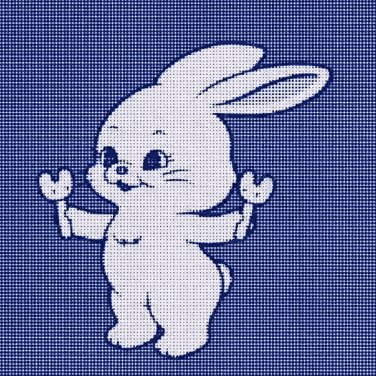

PLAY ▶
TAPE 01: NJDI_ARCHIVE
[ CLICK ANYWHERE TO START ]
ANALYZING_MIND...

REC
■■■□
[ 🎵 BGM: ON ]
NJDI_ARCHIVE
鯨鬱症自我檢測 / VCR.1
⚠️ 請確認周圍環境安全，戴上耳機以獲得最佳體驗。 ⚠️
▶ INSERT TAPE (開始測驗)
PLAYING...
▶▶ FAST FORWARD (跳過影片)
Q_01 / 10
題目文字
PROCESSING_DATA...
▶▶ FAST FORWARD (跳過分析)
SCORE:
/ 30
@ Threads
↗ Share IG/Link
↺ REWIND TAPE